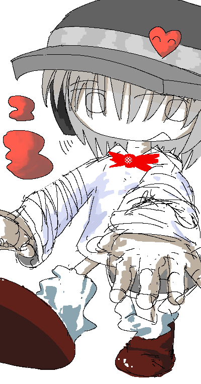

|

|

Linnea
Introduced 11 February 2026
Linnea's Associated Music:
Play Music"Linnea's Theme: The Whole Nine Yards"
View Gallery Page
General Information:
Linnea is a recurring character in Colormill.
Personality:
Linnea has a highly energetic personality, and often moves about in an eagerly fashion to where her peers find it hard to keep up with her. She is highly cordial, but can have a hard time with maintaining boundaries. She is sometimes defined as a chatterbox, but also willing to hear people out.
Spawn Quirk:
Linnea has the ability to spawn a thick red substance. This is due to an extensive medical history that stems from her somewhat radical lifestyle. She can manipulate the shape, texture, and build of a spawned substance.
Occupation:
Linnea is a landscaper and construction worker.
Relationships:
Linnea is Astrid's older sister.
[Colormill Home]
Project Launched 11 February 2026